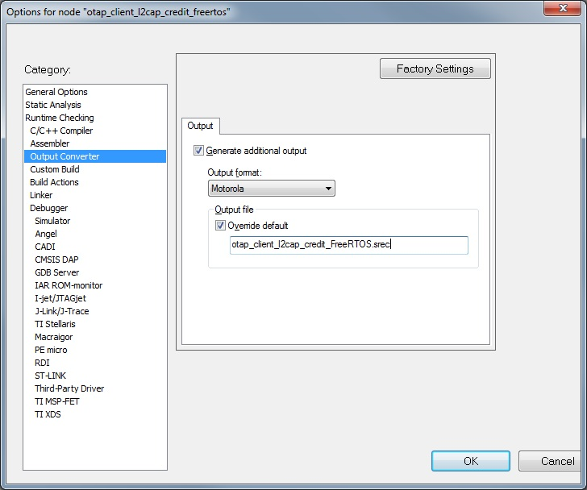
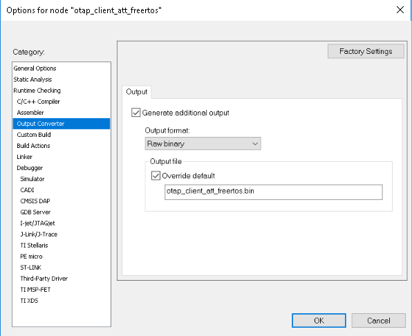
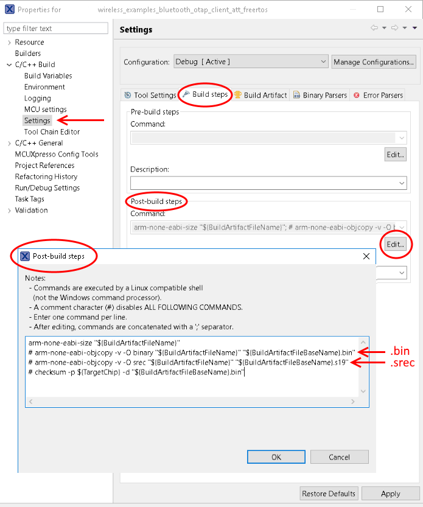
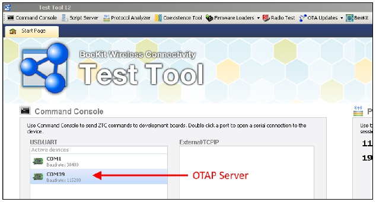
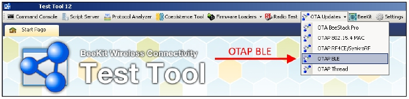
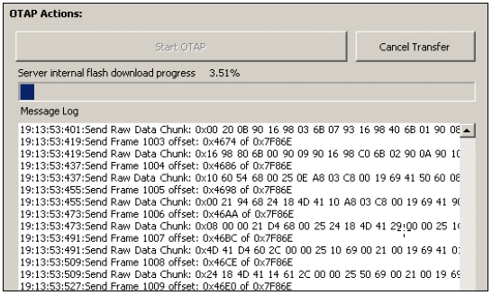
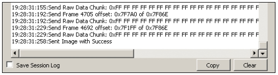

This is a list of requirements.
- Test Tool for Connectivity Products 12.5.0 or newer – Test Tool on www.nxp.com
- Serial COM port drivers – these are board-specific
These are the steps to run the application.
- Flash the OTAP Server onto a supported platform, and the OTAP Bootloader and the OTAP Client to another supported platform. Make sure the board running the
OTAP Server is connected to your PC and your PC has appropriate drivers for the USB to serial device on that board.
Note:
The OTAP Bootloader must be programmed separately into the MCU, before programming the OTAP Client application.
- Create the application to send over the air. The executable must be provided in the
.srec or .bin format. The .srec format executable can be obtained by using the IAR Output
Converter and setting the output format to Motorola as shown below. The created .srec
application image must be offset to begin after the Bootloader region. To offset the
application copy the settings from the Linker->Config tab of the otap_client_l2cap_credit
or otap_client_att example applications project properties. For more details, see the
Bluetooth LE Application Developer’s Guide (BLEADG).
Figure 1. IAR Output Converter Dialog - .srec output

- To obtain a .bin file from IAR select the Raw
binary option in the IAR Output Converter as seen in the figure below.
Figure 2. IAR .bin file output converter

- To obtain a .bin file from MCUXpresso IDE go to
the Project properties -> Settings -> Build steps window and press the Edit button for
the Post-build steps. A Post-build steps window will show up in which the following command
must be added or uncommented (by removing the '#' character at the beginning) if it is
already there: arm-none-eabi-objcopy -v -O binary "${BuildArtifactFileName}"
"${BuildArtifactFileBaseName}.bin". To obtain a .srec (.s19) file add or uncomment the
follwoing post-build command in the same window: arm-none-eabi-objcopy -v -O srec
"${BuildArtifactFileName}" "${BuildArtifactFileBaseName}.s19". This window, is shown in the
figure below.
Figure 3. MCUx .bin .srec file output

- Start the Test Tool application. If you have the proper drivers installed and the OTAP Server board is connected to the PC, then its corresponding serial port shows up in the
USB/UART Active devices view on the Start Page of the Test Tool software as shown below.
Figure 4. Test Tool Start Page - OTAP Server USB/UART

- Go to the OTA Updates menu in Test Tool and choose the OTAP BLE option to open the
Bluetooth LE over-the-air update window.
Figure 5. Test Tool OTAP Bluetooth LE

- Load the image file into the application and configure the image file header and start the OTAP Server
- Start the embedded applications by pressing ADVSW first on the OTAP Client and then on the OTAP Server. The transfer progress and transfer-related messages and/or errors are
shown in the application window. The duration of the transfer depends on the size of the image and the chosen data rate and transfer method.
Figure 8. Test Tool OTAP Bluetooth LE Image Transfer in Progress

- After all the blocks are sent the OTAP Client send an Image Transfer Complete command to the OTAP Server. When this command is received by the PC Application, it displays a
“Sent Image with Success” message in the log window.
Figure 9. Test Tool OTAP Bluetooth LE Image Transfer Completed

- After the image transfer is complete the OTAP Client triggers the bootloader and resets the MCU. The bootloader takes about 30 seconds to flash the image on the board.
After this time passes the MCU resets again and runs the new image.